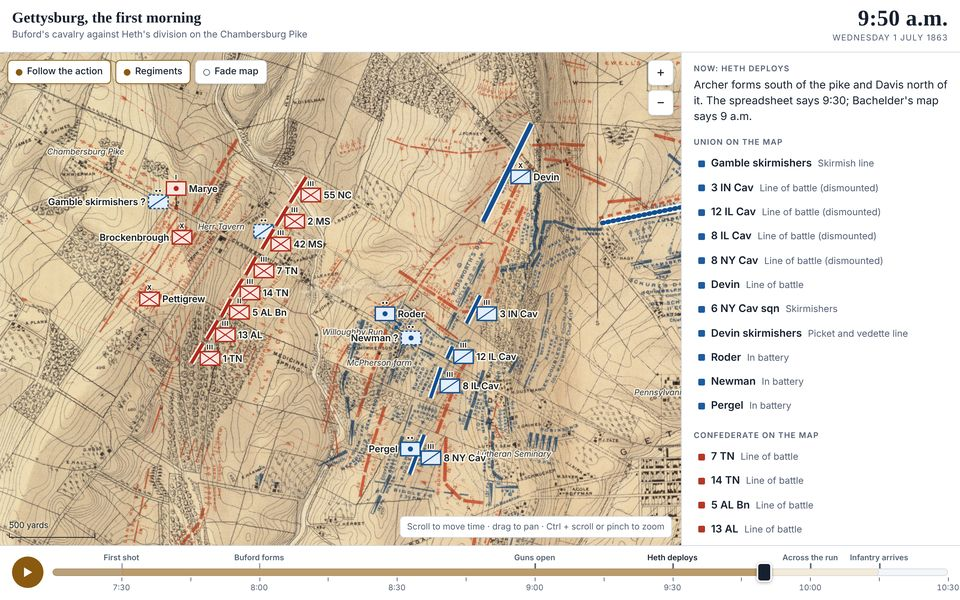
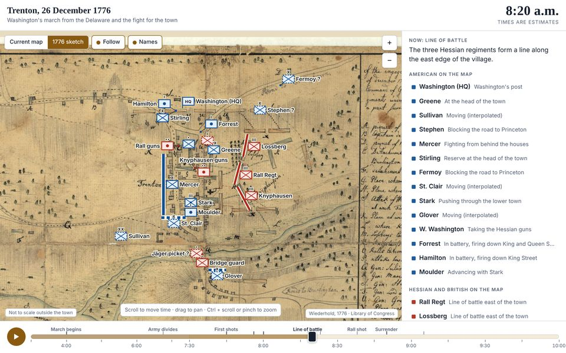
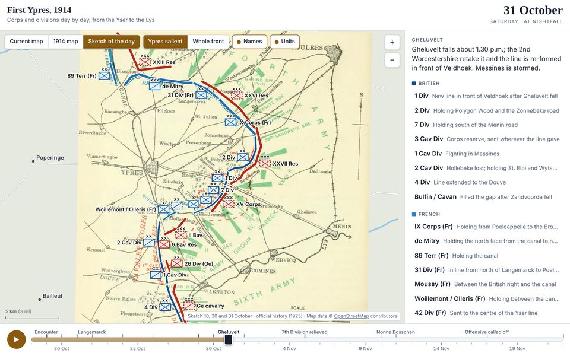

Three pilot battles

Gettysburg, the first morning
1 July 1863
Buford’s cavalry against Heth’s division on the Chambersburg Pike. Regiments and batteries, minute by minute.
Open the playback

Trenton
25 to 26 December 1776
The night crossing, the march and the fight in the town. Regiments, minute by minute.
Open the playback

First Ypres
18 October to 22 November 1914
The fight for the Ypres salient. Corps and divisions, day by day.
Open the playback
In each playback
- TimeScroll, play or step through the battle. Key events are marked on the timeline.
- GroundSwitch between today’s map and a map drawn at the time.
- UnitsTap a unit for what it was doing and who commanded it.
- SourcesSee what the source says, how the position was placed and how sure it is.